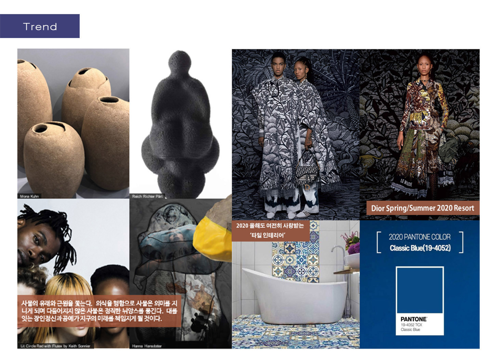

'다양한 삶을 만나며 나의 가능성을 확장'
의식을 행하므로 사물은 의미를 지니고,
대를 잇는 장인정신과 공예가 지구의 미래를 책임지게 될것이다.'
어느정도의 열정으로 작업에 임하고, 그렇게 완성된 작품에서 오는 희열의 크기는 어느정도일까 라는 물음에서부터 이번 컨셉을 잡아 나가기 시작했다.
아줄레주(azulejo)양식을 차용하여 예술가들의 장인정신을 보여줄 수 있는 작업과정을 담은 이야기를 소재로 패턴을 풀어나감.


장인들의 작업과정을 담은 패턴으로 패브릭 제작. 패턴 속의 모티프로 금장을 제작하여 핸드백 완성